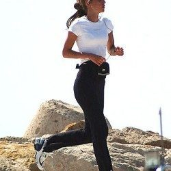

Correr - Wikipedia

Correr
From Wikipedia, the free encyclopedia Jump to navigation Jump to search "Pietro Correr" redirects here. For the patriarch, see Pietro Correr (patriarch) . For the politician, see Pietro Correr (politician) . This article may be expanded with text translated from the corresponding article in Italian . (March 2018) Click [show] for important translation instructions. View a machine-translated version of the Italian article. Machine translation like DeepL or Google Translate is a useful starting point for translations, but translators must revise errors as necessary and confirm that the translation is accurate, rather than simply copy-pasting machine-translated text into the English Wikipedia. Consider adding a topic to this template: there are already 2,187 articles in the main category , and specifying |topic= will aid in categorization. Do not translate text that appears unreliable or low-quality. If possible, verify the text with references provided in the foreign-language article. You must provide copyright attribution in the edit summary accompanying your translation by providing an interlanguage link to the source of your translation. A model attribution edit summary Content in this edit is translated from the existing Italian Wikipedia article at [[:it:Correr]]; see its history for attribution. You should also add the template {{Translated|it|Correr}} to the talk page . For more guidance, see Wikipedia:Translation .The Correr or Corraro family was a major patrician family in the history of the Republic of Venice . Said to have originated in Torcello , the family moved to Venice in the 9th century and entered its Great Council during the Serrata of 1297.
It is particularly notable for its clergymen, such as Pietro ( Latin Patriarch of Constantinople ), Angelo (elected pope Gregory XII in 1406), Angelo's nephew Antonio (a cardinal and one of the founders of the Canons Regular of San Giorgio in Alga ), Francesco Antonio and Gregorio . It is also notable for producing the diplomat Pietro Correr and the art collector Teodoro Correr - the latter left his family palazzo and collection to the city in 1830, forming the Museo Correr . [1]
See also [ edit ]
Palazzo Correr Contarini ZorziReferences [ edit ]
^ (in Italian) Giuseppe Tassini , Curiosità Veneziane, note integrative e revisione a cura di Marina Crivellari Bizio, Franco Filippi, Andrea Perego , Venezia, Filippi Editore, 2009 [1863], p. 204-205.https://www.spanishdict.com/translation
Retrieved from " https://en.wikipedia.org/w/index.php?title=Correr&oldid=1010307674 " Categories : Correr family Hidden categories: Articles with Italian-language sources (it) Articles to be expanded from March 2018 All articles to be expanded Articles needing translation from Italian WikipediaNavigation menu
Personal tools
Not logged in Talk Contributions Create account Log inNamespaces
Article TalkVariants
Views
Read Edit View historyMore
Search
Navigation
Main page Contents Current events Random article About Wikipedia Contact us DonateContribute
Help Learn to edit Community portal Recent changes Upload fileTools
What links here Related changes Upload file Special pages Permanent link Page information Cite this page Wikidata itemPrint/export
Download as PDF Printable versionIn other projects
Wikimedia CommonsLanguages
Français Italiano Edit links This page was last edited on 4 March 2021, at 20:47 (UTC) . Text is available under the Creative Commons Attribution-ShareAlike License ; additional terms may apply. By using this site, you agree to the Terms of Use and Privacy Policy . Wikipedia® is a registered trademark of the Wikimedia Foundation, Inc. , a non-profit organization. Privacy policy About Wikipedia Disclaimers Contact Wikipedia Mobile view Developers Statistics Cookie statement